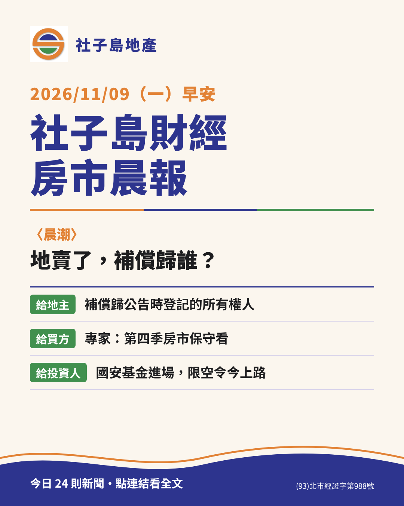

2026/11/09 (一) 早安
社子島財經房市晨報｜地賣了，補償歸誰？
今日 24 則財經與房市新聞，依主題分成 9 類，社子島、主商圈與台北市的新聞排在最前面。點標題就能開啟原文。
〈潮汐表〉今天的三道潮水
- 給地主區段徵收公告前賣地，補償跟著「公告時登記的所有權人」走；簽了約還沒過戶就遇上公告，補償仍發給登記名義人，買賣雙方要靠契約算清楚。
- 給買方專家估今年全國房市周轉率恐創新低，第四季受股市影響保守看；預售市場回春仍需時間。
- 給投資人國安基金今天進場、限空令上路：借券賣出限額降至3%、融券保證金提高至130%；上週五費半反彈4.21%。
〈晨潮〉
地賣了，補償歸誰？
昨天傍晚在堤防上，阿公想起前幾天有人來敲門，問我們：「若是這馬有人欲來買阮的地，地賣出去了，以後的抵價地、補償，是歸阮抑是歸買的人？」今天週一，阿公在淡水河邊，我們就從這個問題開始，也剛好接上今天的服務——買賣。
先記住一句話：補償跟著「公告時的登記」走。依《土地或土地改良物徵收補償費核計核發對象及領取辦法》第7條，被徵收土地的補償費，原則上由徵收公告時登記簿上記載的權利人領取。區段徵收時申請領回抵價地，也是由被徵收的土地所有權人在公告期間內提出。也就是說，看的是登記簿，不是誰先付了錢。
那麼，什麼時候還能賣？社子島的區段徵收計畫，今年5月底由市府報請內政部審議，目前還沒有公告徵收，土地依法仍可以買賣。一旦公告，依《土地徵收條例》第23條，被徵收的土地自公告日起不得分割、合併、移轉或設定負擔，只有公告前因繼承、強制執行或法院判決取得權利、並在公告期間內申請登記的例外；同時也不能新建、增建或改建。
所以會出現三種情形：第一，公告前就完成過戶，新的所有權人登記在簿上，補償與抵價地的權利歸買方；第二，公告後才想賣，原則上已經不能移轉，權利留在原地主身上；第三，最容易出問題的——簽了約、付了訂金，還沒過戶就遇上公告。這時登記上還是賣方，補償會發給賣方，買賣雙方之間怎麼分，就只能回到契約。
徵收前後買賣土地，先記住四件事
- ① 看登記不看付款：補償費原則上由徵收公告時登記簿上的權利人領取。
- ② 公告前可以賣：社子島區段徵收計畫仍在內政部審議、尚未公告，目前依法可以買賣。
- ③ 公告後不能動：自公告日起不得分割、合併、移轉或設定負擔（《土地徵收條例》第23條，繼承等少數例外）。
- ④ 契約寫清楚：補償與抵價地歸屬、公告後無法過戶怎麼辦、費用誰負擔，都要先約定。
因此，社子島的土地買賣契約，我們建議至少寫清楚幾件事：補償費與抵價地的權利歸誰；如果還沒過戶就公告、沒辦法移轉，是解約退款、價金調整，還是由賣方領取後轉交；差額地價、地價稅這些費用誰負擔；地上物、租約與共有人的同意又怎麼處理。條件寫在前面，日後才不會傷了交情。
今天台北市的新聞裡，南港有一條道路工程11月5日公告徵收13筆土地，補償費預計12月15日發放——從公告到領錢，就是這樣一步一步走。實際權利義務，請以內政部與市府公告、地政機關認定為準；個案契約，最好請地政士或律師一起看。
另外，國安基金今天進場、限空令上路，房市方面專家也提醒第四季保守看，往下滑就能看到。
——社子島地產團隊
主商圈：社子島・北士科・關渡洲美平原1 則
社子島本週末無新進度：區段徵收計畫5月底已報內政部審議，尚未公告徵收；背景報導為選戰中社子島開發順序的討論；北士科、關渡洲美平原無新進度
台北市2 則
南港道路工程11/5公告徵收13筆土地、補償費預計12/15發放（公告到發放的實例）；北市優良公寓大廈11/6頒獎
市地重劃・區段徵收2 則
七都新設國小周邊房價多高於區域平均，桃園A7重劃區文青國小價差約22%最大
利率・房貸・資金1 則
外資賣壓與出口商結匯是年底匯市關鍵，匯銀預估本週新台幣在32.5～33元間震盪
房市走向2 則
專家估今年全國房市周轉率恐創新低、第四季受股市影響保守看；預售市場回春仍需時間
土地・產業用地1 則
台南市中心有買家整合約270坪土地、交易金額達億元級
都更・合建1 則
苗栗市新劃3處更新地區，同意門檻降低5%、容積獎勵加5%
稅務與法律實務4 則
明年遺產稅免稅額估調高至1,492萬元；全國單一自住房屋現值門檻182.55萬元；地價稅繳到11/30；長子出資買地登記共有案二審改判
今日財經大事10 則
國安基金今天進場、限空令上路（借券賣出限額降至3%、融券保證金提高至130%）；上週五費半反彈4.21%、那指週線連四黑
〈阿公講古〉
週一一早，阿公沿著淡水河走，退潮後的泥灘上，招潮蟹一隻一隻探出頭來。
「看登記，毋是看錢先交予啥人，」阿公笑了笑：「這款道理，佮阮少年時陣借錢愛寫字據仝款，口講的袂準算。」
他說以前河邊的菜園，很多是向人家租來種的，一季一季照約定交租，「彼時陣，阮阿爸逐年攏會提一籠菜去地主兜，講是感謝。」
說到這裡，阿公皺起眉頭：「若是地租予人種菜，以後徵收的時陣，租的人敢會分去一份補償？阮彼塊地猶有人咧種呢。」
阿公的問題，我們明天回答。
〈廟口泡茶區〉
阿公從河邊走回來，到廟口榕樹下坐定，茶已經泡好了。買賣契約怎麼寫，可以帶來一起看。
想賣一塊地，第一步不是開價，而是把權狀、持分、分區弄清楚；這一段，我們陪您一起整理。
想問問您：如果今天要簽一份土地買賣契約，您最想先寫清楚的是哪一條？打個電話告訴我們，我們把大家最在意的條款整理出來。
不急著成交。我們是守在堤邊的人，守著每一塊土地的權益，直到把它交到願意耕耘它的人手上。
📞 歡迎先來電 0922-252-969先通個電話聊聊，再約時間來廟口喝茶。
 掃描 QR code，加 LINE 好友LINE ID：@shezidao💬 加 LINE
掃描 QR code，加 LINE 好友LINE ID：@shezidao💬 加 LINE
社子島地產團隊｜service@shezidao.com.tw
台北市士林區延平北路九段288號
週一至週六 9:30–18:00（週四 9:30–13:30），週日公休📞 來電 0922-252-969
本站由社子島地產開發有限公司經營，為民間不動產資訊網站，非臺北市政府官方網站；政府公告請以臺北市政府與地政局網站為準。
本期新聞由社子島地產團隊自自由時報、住展雜誌、安傳媒、聯合新聞網、經濟日報、中時新聞網、中央社、風傳媒、新頭殼、經理人、工商時報、Yahoo奇摩新聞、四季線上、優分析 等媒體收集，標題照原文，點擊即可開啟原始報導；法規說明僅供參考，實際權利義務以主管機關公告為準。〈晨潮〉〈阿公講古〉為本團隊之參考意見，不構成投資建議，亦不代表支持任何候選人。〈阿公講古〉的阿公，是我們依島上長輩的身影寫成的人物。